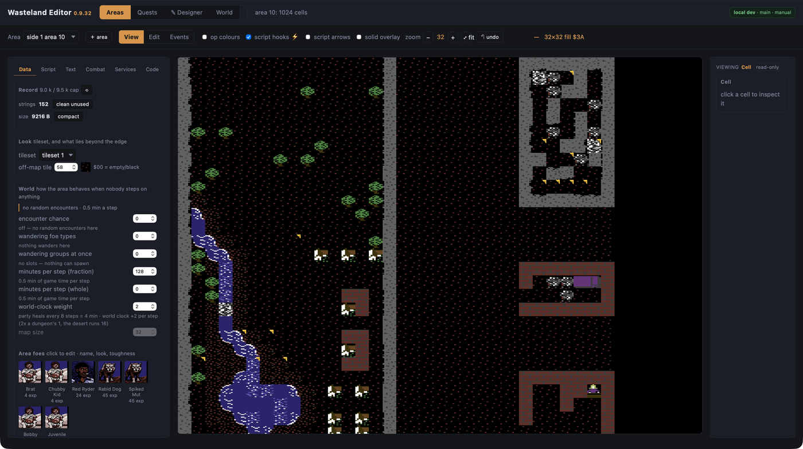
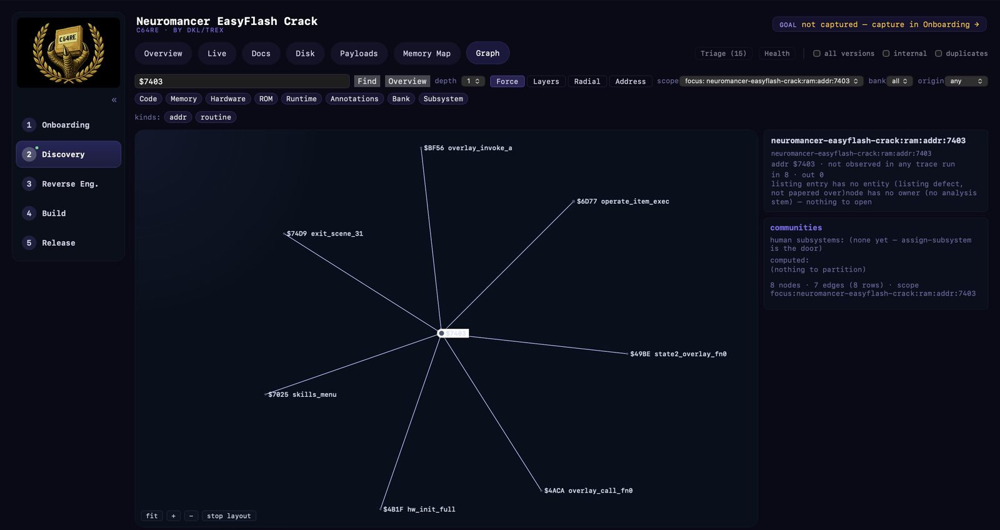
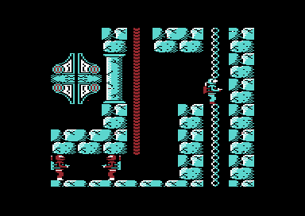

Projects and evidence.
Work produced with C64RE and TRX64. Commercial game material remains the property of its copyright holders.
01 · Full engine reverse engineering
Wasteland engine reverse engineering
Wasteland · Interplay, 1988 · 4 disk sides
The project covers the full engine and its data formats. It includes an EasyFlash port with persistent state and an editor for the original record format.

What the tooling produced
- Annotated engine source: 7,226 lines. An API jump table at $0200–$04FF with 197 vectors is the interception surface for the cartridge backend.
- Extraction verified in both directions: 197 directory entries, 0 missing, 0 orphans.
- Cartridge port with a unified loader, per-file packing and a flash journal that keeps the world state across sessions.
- An editor for areas, texts, portraits and quests, with a byte-exact serializer back to the game's format.
Findings
- Portraits carry no colour data of their own. This follows from the renderer, the fixed window colour setup and the foe records, whose byte 7 selects the portrait. Result: all 88 portraits export with their names.
- Text ids, items and paragraph triggers connect through the scene scripts. The editor derives a cross-area quest graph from item ids and keywords.
- Verification: the text codec re-encodes all 42 records with 0 differences. The engine's own record routine returns identical results for 4,407 (group, id) pairs; after a cartridge boot, live RAM matches the repacked data in 9,206 of 9,206 bytes.
02 · Disk-to-EasyFlash conversion
Accolade Comics EasyFlash port
Accolade Comics · Accolade, 1987 · released 2026 on CSDb ↗
Six disk sides became one 1 MB EasyFlash image. The port replaces the sector-load routine at $1998. The remaining engine stays byte-exact.

What the tooling produced
- Loader decoded: drive code uploaded to $0402, 2-byte key-addressed files, lookup-table pages; 728 unique files extracted.
- Only the sector-load routine at $1998 is replaced; it serves bytes from cartridge banks. Dispatcher $0C23, scene table $0900, sector assembler $0D46 and the script bytecode VM stay byte-exact.
- Protection checks are answered with a synthesised directory sector; save games are written to flash through EAPI.
Semantic annotation, same bytes
The disassembler supplies addresses and generated labels. Annotations add routine names, contracts, and callers. The routine below loads lookup pages, allocates memory, inserts a scene entry, and streams sectors through $1998.
W0C23: // referenced from W0800, W0C5B, W1810, W1C46, ... lda $06 pha lda $07 pha txa pha tya pha jsr W132D bcs W0C37 lda #$00 jmp W0E5C
/* MAIN_DISPATCHER ($0C23-$0E71) * Primary file loader/dispatcher. X=key_hi, Y=key_lo. * Searches scene table first (cache hit path). On miss: * recursively loads LUT pages, allocates memory, inserts * a scene entry, streams sector data via $1998. * Returns C=0 success, or C=1 error with A=error code. */ main_dispatcher: // referenced from api_jmp_load, init_post_load, ... ... jsr search_entry bcs dispatch_check_lut_page_1 lda #$00 jmp dispatch_epilog
Excerpt from Accolade Comics (© 1987 Accolade). Routine header shortened.
03 · Behaviour-driven testing
Last Ninja engine migration tests
Last Ninja 1–3 · System 3 · unified engine
Three games are being merged into one data-driven engine. Tests run the original and replacement code with identical input, then compare the results.
Ongoing work
How behaviour is tested
- Scenarios in Gherkin: given a real cartridge image, wait frames, hold the joystick, then read memory. Each run uses a private headless TRX64 machine.
- Replay: the original routine and the new routine run on identical inputs — 833,814 wall tests for Last Ninja, 608,334 for Last Ninja 2. Pass means 0 differences.
- Lock-step: the original game and the new engine run side by side with the same input and random seed and are compared at checkpoints.
Results
- Last Ninja 2, level 6: the player walked off the roof in mid-air. Reading the converted level data predicted ignored edge handlers; lock-step confirmed the fall at x 54 via trigger 49. Replay differences went from 436 to 0.
- Documentation said Last Ninja 2 wall lines are one-sided. The code tests the crossing from both sides, and the replay's 436 differences were all enemy steps blocked that way. Reading the code found 32 such claims that the code contradicts.
- Status: collision, walls, falls, exits, sprites and hazards migrated with 0 differences. Combat, AI, items and boss logic are in progress.
Scenario: walking right, the roof edge starts a fall at x 54 (trigger id 49)
Given the disk "tools/a3/out/xl/unicart2_xl_start10.crt"
When I wait 700 frames
And I hold joystick 2 right for 34 frames
Then a FALL runs from x 54: fall_on = 1, trig_act = 49, exit lock $FF,
and the player is below the roof line
# returned: trig_act $B0 = $31, fall_on = 01, fall_x/y = $36/$5D (54,93)
And I wait 60 frames
Then the fall has ended in the death flow
# returned: fall_on = 02, fall_y = $75 (117 = 61 + 7 x 8), dead = 01
# The original's reference (lock-step): lands at (26,61) right edge: trigger 49 at x 54 left edge: trigger 50 at x 18 # Unified engine: identical.
Scenario steps run verbatim in the sandbox; the returned values are recorded under each step.
04 · A code graph for 6502 assembler
Neuromancer 6502 code graph
Neuromancer · Interplay, 1988 · engine, overlays and 1541 drive code
Static analysis produced 3,079 nodes and 11,889 edges. A separate human layer contains 1,634 annotated nodes. Re-analysis does not overwrite that layer.

What the graph answers
- $7403 has exactly two writers: engine initialisation and the overlay itself. The readers are the demand-load test for the $7400 overlay slot, spread over two payloads.
- Engine API routine $5292 draws a string from 32 call sites. The computed signature flags that it reads its own return address — proof that the string pointer is an inline word after each JSR, which a linear disassembly decodes as garbage.
- Argument domains across call sites: the disk loader at $4BEC takes its sector from the tables at $FE3C and $6300, the ones the load-table documentation describes.
Impact before an edit
- Changing the two-instruction banking helper $4B9F breaks 6 direct callers. Through its write to $01 it also reaches the raster IRQ and the fastloader in another file — no call edge connects them.
- UNKNOWN is a separate result, never counted as low risk: indirect accesses, code on the 1541's own 6502, self-modifying writes.
- For the EasyFlash port, "identified" is defined as graph predicates: byte coverage, a signature per routine, every indirect access resolved or declared.



$ c64re graph signature '$5292' in: A X Y zp:$54 zp:$77+X zp:$7B+X ... clobbers: A X Y C Z N V zp:$4C zp:$4D + 20 self-modified operands stack: balanced [reads-return-address] ; caller side jsr draw_string_inline .byte $CE, $4C ; -> 'I/O Error.'
depth 1 will break (6)
copy_block_under_io, load_room_scene, ...
depth 2 likely affected (14)
sector_transfer reads $0001 (fastloader)
raster_irq_entry reads $0001
depth 3 may need testing (11)
UNKNOWN (35)
copy_block_under_io -> lda ($42),y
the graph holds the pointer, not the cell
Query output from the Neuromancer project graph, trimmed. Neuromancer © 1988 Interplay.
05 · BBC Micro-to-C64 port
Codename Droid C64 port
Codename Droid (Stryker's Run Part 2) · Superior Software / Acornsoft, 1987 · BBC Micro Model B
The BBC game code runs on the C64 with 159 changed bytes. A port layer under the game replaces the MOS calls, the CRTC screen, the SN76489 sound chip and the keyboard. Target: one D64, PAL and NTSC.
Ongoing work
What the tooling produced
- Annotated 64tass source of the game file: 10,081 lines. Built with PORT=0, it reproduces the disc file byte-identically. Base: the radrestoration/CodenameDroid disassembly.
- Port-site inventory over 6,137 instructions: 18 SHEILA I/O sites and 17 MOS entry calls. The game layout does not change: every patch keeps the length of the instruction it replaces.
- Display: the game draws into its own MODE 5 buffer, unchanged. 16 hooks mark the cells a writer touches; the port converts those cells into a multicolour character set through a 256-byte bit-permutation table and swaps two screen matrices in the vertical blank.
- Sound: the MOS 1.20 sound code is ported instruction for instruction from the ROM. It drives an SN76489 register model, which is converted to SID registers once per raster IRQ.
Findings
- Speed: the BBC runs at 2 MHz, the C64 at about 1 MHz. Delay loops get new counts: one delay step takes 1,448 cycles on the BBC (0.724 ms); with 720 cycles it takes 0.731 ms on PAL (+0.9 %) and 0.704 ms on NTSC (−2.8 %). Frame waits follow a 50 Hz BBC tick derived per video model.
- The 6510 owns $00/$01. The four enemy variables at $00–$03 move to $E4–$E7: 118 operand bytes.
- Walking right, a picture update at the mid-scroll wait showed the entering column at the left edge, one row down. Measured: 33 such updates in 400 frames before the fix, 0 after.
- Every change is proven by a scenario file: 153 scenarios in 91 feature files. Where a change fixes a defect, the scenario also requires the old build to fail.
; $139D scroll right: plot entering column jsr plot_column_of_tiles ; 20 CF 18 jsr port_hook_column ; 20 D3 83 ; $2D30 enemy fire random source lda uservia_t1cl ; AD 64 FE lda $DC04 ; AD 04 DC CIA1 timer A ; $33E5 delay loop inner count cmp #110 ; C9 6E cmp #54 ; C9 36
Scenario: 400 frames walking right, no picture update
of a half-done scroll
Given the mark "walk_gchk_before"
And variant "build" loads "build/v1_gchk_13d2.bin" at $13D2
And variant "build" loads "build/v1_gchk_port.bin" at $8000
When I hold joystick 2 right for 400 frames
And I wait 2 frames
Then $C0B0 is $00 $00
# gchk_count: updates while the scroll was half done
Then $D011@io is one of $1B, $9B
Then the baseline fails
Excerpts from the project's patch table and scenario suite, trimmed. Codename Droid © 1987 Superior Software / Acornsoft.